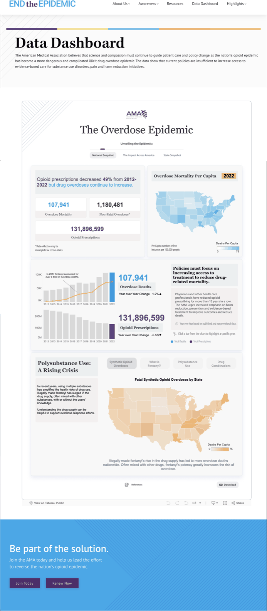
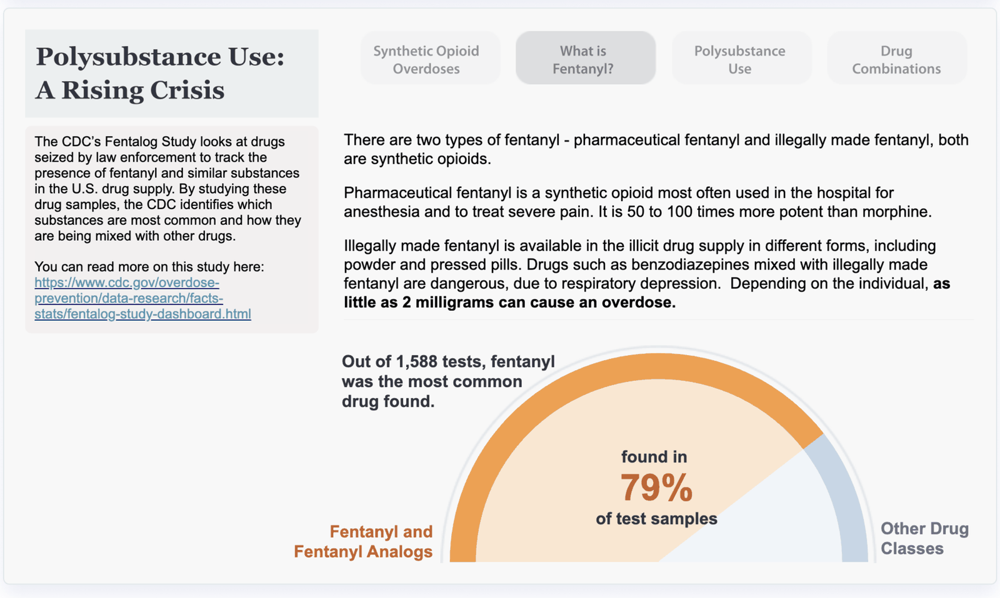
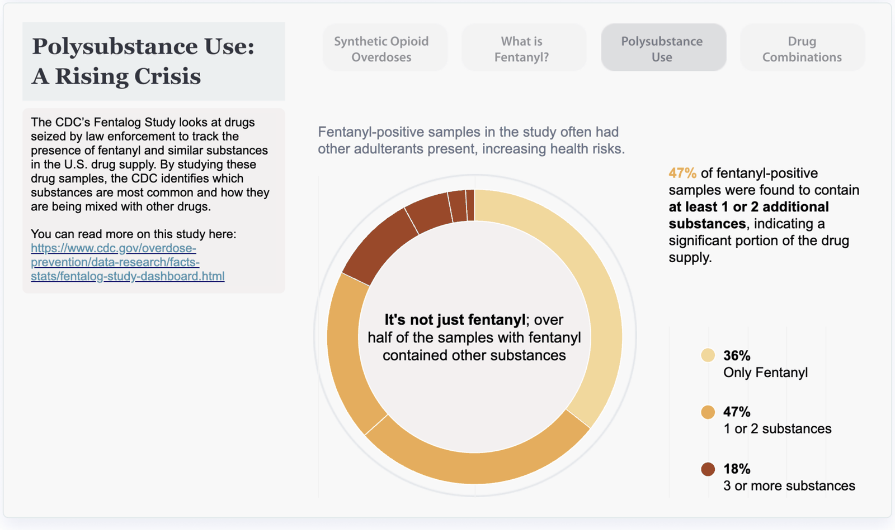
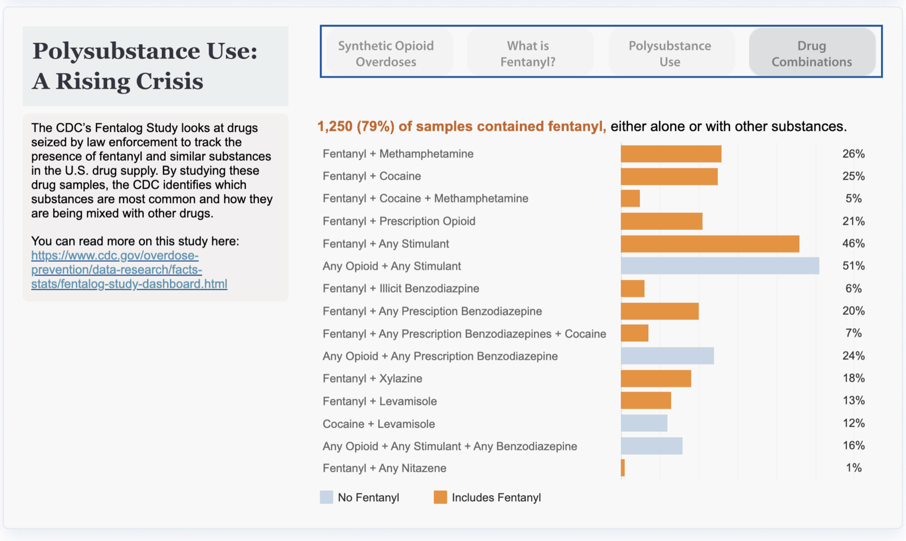

The Overdose Epidemic
A public data dashboard for the American Medical Association. The hard part was never the chart. It was finding the one sentence the data could actually defend, and then building everything around it.

The argument
Two numbers that should not both be true
Physicians had done the thing they were asked to do. Opioid prescribing fell, year over year, for more than a decade. If prescribing was the cause of the epidemic, the epidemic should have receded with it.
It did not. Overdose deaths kept climbing the whole time.
That contradiction is the dashboard. Everything else on the page exists to make it hold up under scrutiny, because the conclusion it points to is uncomfortable: if the prescription pad is not what is killing people any more, then policy aimed at the prescription pad is not what will save them.
Opioid prescriptions
Overdose deaths, most recent year
Policies must focus on increasing access to treatment, not on cutting prescriptions further.
How it was made
Ethnography first, then the data schema
Most dashboard projects start with a data extract and a request for “something visual.” This one started with listening.
Sessions with AMA leadership to find the goals and the message they were actually trying to land.
Wrote the hypotheses the dashboard would test, so there was something to be wrong about.
Interview questions built from those hypotheses, to sharpen the narrative before any design.
Requested the prior year’s raw data. Where it would not carry the argument, defined the schema that would.
Iterative design with a junior designer, aesthetic and narrative structure developed together.
Published to the AMA’s public site, with the underlying workbook on Tableau Public.
Step four is the one that gets skipped, and it is the one that decides whether the dashboard can make an argument at all. Raw data arrives shaped by whoever collected it, for whatever they needed at the time. If nobody redefines it, the visualisation inherits their question instead of asking yours.
Step five is a leadership step as much as a design one. I guided a junior designer through the iteration rather than taking the file. The output is better when the person drawing it understands the argument, and there is a second designer at the end of it who can do this again.
The second half
If not prescriptions, then what
Proving the contradiction is only useful if the page then answers the question it raises. The lower half of the dashboard does that, as a four-step sequence rather than a wall of charts.
What is actually causing synthetic opioid overdoses?
What is fentanyl, and why does potency change the math?
Is it fentanyl alone, or fentanyl plus something else?
Which combinations, specifically?



The colour rule on the last chart is the whole information-design decision. Every bar could have been one colour and sorted by size. Splitting them into “includes fentanyl” and “no fentanyl” turns a ranked list into an answer, and it is legible from across a room.
Each panel cites its source in the margin. The claims are the CDC’s and the AMA’s, linked back so a sceptical reader can leave the page and check. On a public health dashboard, the citation is not a footnote. It is load-bearing.
What I take from it
A dashboard is a claim with evidence attached
Nobody arrives at a public health dashboard wanting to explore. They arrive wanting to know whether the thing they believe is right, and they leave in ninety seconds either way. That is not a data problem. It is a rhetoric problem with a data budget.
So the work is: find the claim, test whether the data can defend it, define the schema if it cannot, then design the shortest honest path from the top of the page to the reader believing you.
Make it arguable, not just visible.
Have data that should be changing someone’s mind?
This is finding the argument inside a dataset and building the page that makes it stick. Tell me what you need people to understand.
Start the conversation